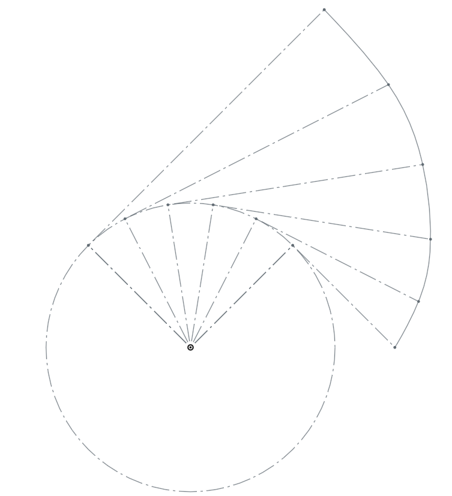

．為何需要減速機?
為了達到降低速度與提高扭力之目的, 馬達的輸入轉經由減速機, 使輸出轉會因減速比而改變
例如馬達轉速 3000rpm 經過 1 比 3 減速機之後, 轉速會改變為 1000rpm, 但扭力卻提高近三倍．何謂漸開線?
一條直線繞在基圓外, 將線往外拉開, 線上的一點所經過的軌跡

．如何畫漸開線正齒輪輪廓 ?
．如何模擬 2D 正齒輪組囓合 ?
．如何模擬 3D 正齒輪組囓合 ?
可以利用 Onshape 上 FeatureScript Spur Gear 的模組進行簡單的模擬
．如何將齒輪減速機構納入四足行走機構 ?
．如何以 2D 動畫模擬齒輪囓合傳動 ?
．如何以 3D 動畫模擬齒輪囓合傳動 ?
．如何模擬四足機構行走 ?
將在 Onshape 上繪製好的四足機構, 匯入 V-rep 模擬實際的運動方式